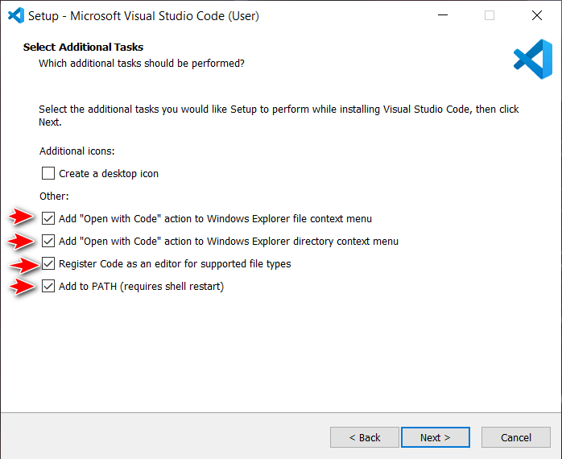

Get Started With Visual Studio Code
-
Download and install Visual Studio Code:
Make sure to check the following options when prompted (if available):
I also recommend you to get familiar with Keyboard Shortcuts and Emmet Cheat Sheet:
-
Creating a folder:
-
Create a folder where you want all your projects to be stored and name the folder, e.g.
development, programming or projects -
If you followed the first steps in this tutorial correctly you should now be able to right-click inside the folder you created and select "Open with Code" (on Windows 11 you will have to select "Show more options" in the context menu first) to open VS Code in that destination.
-
You can also create a folder in VS Code by clicking File > Open Folder... then go to your desired destination, right-click inside the window and select New > Folder. Name your folder and make sure it is selected, then click Select Folder.
-
Quick tip: You can also create folder structure when creating a new file by typing the entire structure you prefer e.g.
myProject/index.html or myProject/css/style.css
-
-
Creating a file:
- Click File > New File or in the Explorer sidebar to the left, click
the icon

- Give the file appropriate name e.g. "index.html" if it is the staring point of your webpage
- Make sure your file has the correct extension i.e. ".html" for HTML, ".css" for CSS or ".js" for javascript etc.
- Click File > New File or in the Explorer sidebar to the left, click
the icon
-
For "Live Preview" follow below steps:
- Open VS Code and go to: View > Extensions.
- Search for "Live Preview" and install it.
- You can now use "Live Preview" by clicking the "Show Preview" button in the top right corner.